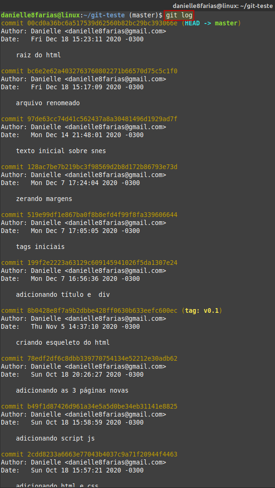

Para ver o histórico de commits do Git, digite:
$ git log
- $ indica que você deve usar o usuário comum para fazer essa operação.
E o retorno será todos os commits feitos até o momento.
Pressione [ENTER] quantas vezes forem necessárias para ver os outros commits (isso ocorre quando o número de commits é maior do que o espaço ocupado pelo terminal) e ao final, quando aparecer a palavra (END), pressione a letra q para sair.
Caso queira ver esse histórico numa versão mais resumida, use a flag apresentada abaixo:
$ git log --oneline
Caso queira ver apenas os 4 últimos commits,
$ git log -4
Você pode substituir o número 4 por outro número inteiro, conforme a necessidade.
Também é possível fazer uma combinação desses comandos. Exemplo:
Usando o git log em combinação com a flag oneline.
Para ver o histórico de tudo que foi feito (não apenas commits),
$ git reflog
Esse comando é muito útil para usar com o reset quando você precisa recuperar algo que foi perdido por acidente, seja depois de um merge ou próprio reset problemático, algo que quebrou ou foi excluído e até mesmo recuperar um branch excluído. Ele é como uma máquina do tempo mais potente do que o log.
$ git reset HEAD@{número_do_índice}
Entretanto, o reflog tem 90 dias de prazo de validade padrão.